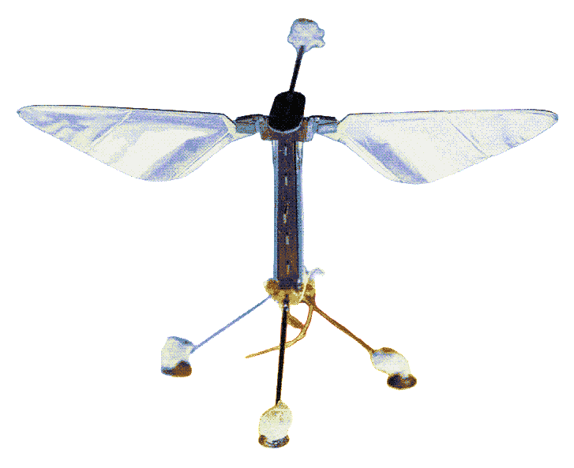

Le principe de ce projet réside dans l’étude du vol des ABEILLES et leurs modes de communications lorsqu'elles sont en communauté. Des chercheurs de Harvard ont développé des robots capables d’imiter le vol et le mouvement des abeilles qui volent ensemble. L’idée finale serait d’ajouter aux insectes robotisés des caméras et des micros pour les utiliser lors de missions trop risquées pour les humains. En effet, cette innovation permettra d’effectuer des repérages dans des zones difficiles d’accès mais aussi surveiller des cultures dans le milieu agricole et mesurer l’évolution
